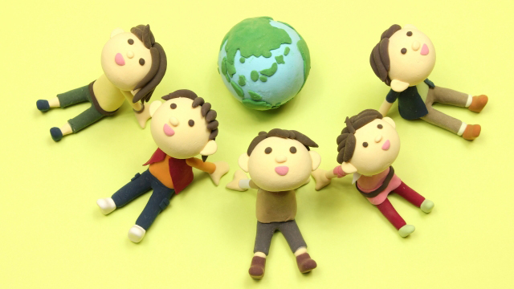

「子ども」というものに対する扱い方、とらえ方は民族や歴史によって違ってくるということは意外と知られていないようです。
子どもはいつの時代でも存在していたはずですし、親は我が子の成長を願い一生けん命育てて来た。そんなふうに私たちは何となく感じているのではないでしょうか。
ところが、たとえば西洋と日本では「子ども」に対する接し方や「子ども」のとらえ方は歴史的に見て相当違っているし、その過程で生じた養育法や教育システムにもそれが反映しているのは事実です。
さて、それなら日本と西洋（ヨーロッパ）では子どもに対する認識はどう違うのか。
まず簡単な問いに答えていただきましょう。
問．日本人の子どもに対する「根本的態度」はどちらか？
1.子どもは厳しく育てる
2.子どもを優しく可愛がる。
実はこの問いは先日私が親対象のセミナー「親学」の冒頭で尋ねたものです。最初はほとんどの方は1の厳しく育てるを選びました。皆さんはどちらを選びますか？
さて正解は2です。日本人は本来、子どもを可愛がって育てる傾向があるということ。
日本人が歴史的に見て子どもをどれほど可愛がって育てたか、今の私たちにはちょっと想像できないほどかも知れません。
実際その様子は16~17世紀に日本に渡ってきたヨーロッパの宣教師の記録や、幕末から明治期に日本を訪れた多くの欧米人たちの膨大な「日本観察記」に詳しく記されています。
一例をあげるなら、オールコック（英国公使）は日本について「子どもの楽園」であると言っています。その他多くの外国人が「日本ほど子どもが大事にされ自由にされ、可愛がられている国はない」「ほとんど子ども崇拝だ」とまで言っています。
さらに彼らは「日本の子どもたちは楽しそうで、利発で親は（ヨーロッパのように）ムチで罰を与えることもない」と驚きをもって書いています。（ちなみに当時のヨーロッパでは子どもをしつける際ムチで打つのは当たり前だった）
さてこれらの記録から分かることは、私たち日本人の子育ては基本的（伝統的）に「子ども」を可愛がり大切にしその存在をしっかり認めていたということです。
そしてその「子供を可愛いがる。大事にする」というDNAは現在も私たちに受け継がれている。大雑把に考えてそう言えるということです。
それに対してヨーロッパの子育ての伝統はどうでしょう。
先に言ったように、子どもを慈しんで大事に育てるというより罰を与えながらビシバシ鍛えていくというやり方。
悪く言えば調教、良く言えば訓練でしょうか。
いや、実を言えば、そんな生やさしいものではなかった。近代以前のヨーロッパでは子どもは多くの場合「虐待」に近い扱いを受けていたのです。
その背景にはどんな考えがあったのでしょうか。
「子ども」の誕生
1960年フランスの歴史学者フィリップ・アリエスは「子供の誕生」という書物の中で言っています。
「中世までは子どもという概念も教育という概念も存在せず、7~8歳以前の子どもは動物と同じ扱いであり、死なせても罪に問われなかった・・・」
何と幼児は動物と見なしていた！
だから殺そうが売り飛ばそうが親の勝手であったということです。また7~8歳以降は師弟修行に出され、大人と同じ条件で過酷な労働に従事させられたという。
やっと「子ども」が人間として教育すべきと考えられたのは17世紀以降、つまり近代に入ってからだと述べています。
これを学問の世界では「子どもの発見」と呼んでいます。
つまり子どもは近代以前は「不完全な大人」として価値ある存在とは見なされていなかった。
信じられないことに「子ども」という存在そのものが意識上にのぼっていなかったのです。
どうでしょう？「子ども」というものが近代に入って突然「発見された」というのは意外ではないでしょうか。
セミナーでも多くの親御さんたちはこの話に驚いたようでした。
とにかく日本とヨーロッパの「子ども観」や「子育てのあり方」については歴史的に明確な差があることは事実です。
昔から子どもの存在を認め大事に育ててきた日本と、子どもを「不完全な大人」として過酷に扱ってきたヨーロッパ。
ただ、ここで言いたいのは日本が良くてヨーロッパはダメということではありません。
日本でも子どもの虐待などは昔からあったし（民俗学の研究でも明らか）ヨーロッパでもルソーやペスタロッチのように子どもの教育の重要性を訴える動きはありました。（ルソーの「エミール」を見よ）
そして重要なことは、ヨーロッパではいったん「子ども時代」の教育の必要性を理解すると、教育法や学校制度を合理的にシステマティックに構築したのに対し、日本では明治以降まで教育の近代化はそれほど進まなかったということです。
やはり日本は子どもを可愛がって育てる、なるべく手許において面倒を見る傾向が強く、そのため家族や共同体が子どもを抱え込みがちであるといえるでしょう。
もちろん現在では学校制度が高度に整えられていますが、子どもを厳しく鍛え上げ個人の能力を限界まで高めるという点では、学校はそこまで徹底した機能を果たしていないといえます。
それでも近所の人々や親類、地域社会（共同体）が皆で子どもを守り育てる伝統があった時代ならまだしも、今のように共同体が崩壊し、子育ての責任全てを親が負うようになると日本の子育ての現状はなかなか厳しいと実感します。
私たちが本来もっているもの
いま、多くの親が子育てに自信をもてず不安なのは何が正解か分からないからだと思います。「自分たちの育て方は間違っていないだろうか」というのが多くの人の悩みです。そしてますます子どもを抱えこんでしまう・・・。世間は何かあると「今どきの親は子どものしつけもできない」とか「子どもに甘い」とすぐ批判してくるからです。
親たちはそんな世間の眼差しに脅えているようです。
確かに私たち日本人は子どもに甘く、距離がうまく取れない傾向があります。母子密着も見られます。そこはバランスを考えなければなりません。
しかしそれでも親の皆さんに次のことを言いたいと思います。
先に見てきたように、私たちと日本人は何百年も（あるいは何千年も）子どもを慈しみ大切に育ててきました。
私たちは世界で最も子どもを愛する民族であることは間違いありません。
そして子どもにとって親の「愛」ほど大切なものはありません。
どんな教育理論も教育システムも、子どもに対する純粋な愛なくして存在意義はありません。どんな高尚な教育論もベースに愛がなければ空論に過ぎないのです。
多くの教育理論、システムは欧米発です。
それらはむしろ「愛の欠如」から生まれ出たと知れば、私たちはもっと子育てに自信をもつべきだと分かります。
親は子育ての「正解」を求めて右往左往するのではなく、自分が持っている子への純粋な愛をこそもっと大切にし、子どもに注ぐべきである。
あなたは既に子育ての最も大切なキーをもっているのです。「正しい子育て」の理論などに惑わされず自らの内にあるナチュラルな「子どもへの愛」に自信をもちましょう。